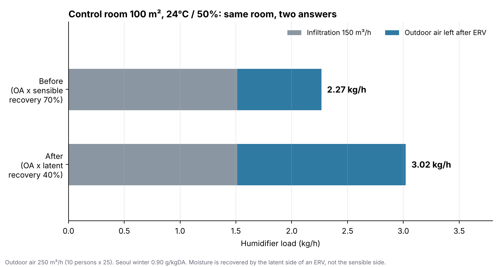

이번 주에도 설계기준서 세 개를 용량계산서 앱 코드와 한 줄씩 맞춰봤습니다. 습도 제어 대상 실(AC-004), 부하계산 방법(AC-005), 외피 열관류율(AC-006)입니다.
지난주와 다른 점이 하나 있었습니다. 앱을 고치는 도중에 기준서 자체를 다시 정해야 하는 질문이 세 개 나왔고, 그 질문을 두고 두 AI의 검토 의견이 엇갈렸습니다. 이번 기록은 고친 코드보다, 그 엇갈림을 어떻게 정리했는지가 중심입니다.
결과부터 적겠습니다.
- 앱: 계산 로직 2곳 수정, 근거 없는 기본값 2곳 교체(바닥 3.13, 방위계수), 화면 출처 표기 6곳 정정
- 기준서: 세 문서를 2026-10-05자로 개정. 결정 3개(방위계수 채택, 3.13 폐기, 비거실 부위 규칙), 예제 숫자 정정 1곳, 계산 원칙 추가 1곳, 초기 가정 명시 1곳
- 정정: 지난주 제가 쓴 문장 하나
먼저, 지난주 기록 정정
지난주 개발 기록에 “17개 지역 회귀 테스트를 붙였다”고 썼습니다. 정확히는 그때 한 번 돌린 검산이었고, 저장소에 남아서 다시 돌릴 수 있는 테스트 파일은 없었습니다. 기준서가 바뀌면 테스트가 먼저 알려준다고 썼는데, 그 장치가 실제로는 아직 없었던 겁니다.
이번 주에 tests/standards.test.js로 고정했습니다. AC-001의 17개 지역 외기값과 습구→수분비 계산, AC-003·004의 실 유형 10종 온습도와 가습 대상, AC-005의 방위계수와 예제 숫자, AC-006의 지역구분과 [별표 1] U값까지 267개 항목을 확인하고, 지금 모두 통과합니다. 외부 패키지 없이 node tests/standards.test.js 한 줄로 돌아갑니다.
쓴 것과 한 것이 어긋나면, 그걸 먼저 찾는 사람이 저여야 한다고 생각합니다.
AC-004: 가습기가 25% 작게 계산되고 있었습니다
중앙제어실은 겨울에도 24℃·50%를 유지해야 해서 가습량을 kg/h로 계산합니다. 중앙제어실에는 전열교환기가 있고, 전열교환기는 배기의 수분 일부를 외기에 돌려줍니다. 그래서 실내로 들어오는 공기의 습기비가 바깥 공기보다 높아지고, 그만큼 가습량이 줄어듭니다.
앱은 이걸 계산할 때 현열 난방효율(카탈로그 값이 없으면 70%)을 쓰고 있었습니다. 온도를 회수하는 비율로 수분 회수를 계산한 겁니다. 같은 앱에서 냉방 잠열에는 잠열 회수율(없으면 40%)을 쓰고 있었으니, 같은 장치를 두고 계절마다 다른 성격의 숫자를 쓰고 있었던 셈입니다. 지난주 AC-001에서 찾은 “수증기압 식을 수분비에 쓴” 문제와 같은 종류였습니다. 식은 그럴듯한데, 들어간 값의 물리적 의미가 다른 것.

종전 방식으로는 2.27kg/h, 고친 뒤에는 3.02kg/h입니다. 종전 값은 25% 작았습니다. 가습기는 보통 0.5kg/h 단위로 올려 고르니, 2.5kg/h짜리를 고를 자리에 3.5kg/h짜리가 필요했던 겁니다. 겨울 가장 건조한 날, 중앙제어실 습도가 목표까지 올라가지 않는 방향의 오차입니다.
이 수정은 기준서에도 원칙으로 남겼습니다. 아래 “엇갈린 검토”에서 다시 이야기하겠습니다.
AC-006: 지역을 바꿔도 U값이 따라오지 않았습니다
앱은 실을 새로 만들 때 프로젝트 지역의 [별표 1] U값을 넣어줍니다. 서울이면 중부2(외벽 0.240), 부산이면 남부(0.320)입니다.
문제는 순서였습니다. 기본 지역이 서울이라, 실을 몇 개 만든 뒤에 지역을 부산으로 바꾸면 이미 만든 실의 외벽은 0.240으로 남아 있었습니다. AC-006이 “지역을 잘못 고르면 난방부하가 안전측이 아니게 된다”고 경고하는 바로 그 상황입니다.
그렇다고 지역을 바꿀 때 모든 U값을 덮어쓰면, 사용자가 건축 단열검토서 값을 직접 넣은 칸까지 지워집니다. AC-006의 1순위가 바로 그 값입니다. 그래서 규칙을 정했습니다. 이전 지역의 [별표 1] 기본값과 정확히 같은 칸만 새 지역 값으로 바꾼다. 서울에서 실 두 개를 만들고 한 실의 남측 외벽에만 0.200을 넣은 뒤 부산으로 바꿔 확인했습니다. 0.200은 그대로, 나머지 외벽은 0.320, 창은 1.800, 지붕은 0.180이 됐습니다.
엇갈린 검토: 같은 질문, 다른 결론처럼 보였던 것
여기서부터가 이번 주의 핵심입니다.
앱을 고치다 보면 기준서가 답하지 않는 질문이 나옵니다. 이번에는 세 개였습니다.
- 앱의 난방 방위계수(북 1.10, 동·서 1.05)가 기준서가 인용한 학회 표(북 1.20, 동·서 1.10, 지붕 1.20)와 다르다. 어느 쪽이 회사 기준인가?
- 땅에 닿은 바닥의 기본 U값 3.13은 출처를 설명할 수 없다. [별표 1] 값(중부2 0.290)으로 바꾸면 바닥 열손실이 10분의 1이 된다. 폐기해도 되는가?
- [별표 1]은 거실의 외벽과 바닥 기준이다. 기계실·전기실·창고 같은 비거실 실에는 무엇을 넣는가?
저는 기준서와 앱 코드를 함께 놓고 검토했고, 같은 질문을 ChatGPT에게는 기준서만 주고 검토를 받았습니다. 처음에는 의견이 계속 엇갈리는 것처럼 보였습니다. 제가 “고쳤다”고 한 항목을 ChatGPT는 “확인 필요”라고 했고, 확정했다고 생각한 숫자에 다시 검토 사항이 붙었습니다.
나란히 놓고 보니 이유는 단순했습니다. 두 검토자가 본 자료가 달랐습니다. ChatGPT는 앱 코드를 받지 못했으니 “앱에 반영됐는가”를 판정할 수 없었고, 그래서 정당하게 “확인 필요”로 남겼습니다. 실제로 결론이 다른 항목은 거의 없었습니다.
그래서 엇갈림을 정리하는 방식을 바꿨습니다. 원고와 앱은 잠시 내려놓고, 기준서에서 결정이 필요한 것만 추려 하나씩 합의했습니다.
| 질문 | 합의한 결정 |
|---|---|
| 방위계수 | 학회 표 2.36을 회사 기준으로 채택. 북 1.20, 동·서 1.10, 남 1.00, 지붕 1.20. 근거가 확인되지 않은 1.10·1.05는 폐기 |
| 바닥 3.13 | 공통 기본값으로 폐기. 새 계산에는 [별표 1] 지역·조건별 값. 과거 저장본은 일괄 변경하지 않고 “출처 미확인·재검토 필요”로 표시 |
| 비거실 부위 | 건축 U값 우선. 없으면 건축에 단열 여부와 구성을 확인한 경우에만 [별표 1]을 준용. 단열 여부를 모르면 자동 입력하지 않음 |
이 과정에서 제 표현 하나도 고쳐졌습니다. 저는 가습 계산을 “전열교환기가 회수한 만큼 외기량을 줄여 계산한다”고 설명했습니다. ChatGPT는 이렇게 짚었습니다. 회수기를 지나는 외기 풍량이 줄어드는 게 아니라, 회수 후 공급공기의 습기비가 바뀌는 것이라고. 계산 결과는 같지만, 기준서에 남길 문장으로는 물리적으로 정확한 쪽이 맞습니다. AC-004에는 그 표현으로 들어갔습니다.
회수 후 공급공기 습기비 = 외기 습기비 + 수분 회수 효율 × (배기 습기비 − 외기 습기비)
비거실 규칙에서도 제 제안보다 한 단계 엄격한 결론이 나왔습니다. 저는 “[별표 1]을 준용하고 단열 여부를 확인한다”를 제안했는데, 합의안은 확인한 경우에만 준용하고, 모르면 비워둔다였습니다. 단열 여부를 모르는 기계실에 0.290을 넣으면, 무단열 벽을 단열된 벽으로 가정해 부하를 작게 계산할 수 있기 때문입니다. 순서를 바꾼 것만으로 위험의 방향이 달라집니다.
기준서에 반영한 것
세 기준서를 2026-10-05자로 개정했습니다. 바뀐 곳마다 확정 박스와 개정기록을 남겼습니다.
- AC-004: 수분 회수 장치가 있을 때의 가습량 계산 원칙(4.4.3) 신설. 외기 풍량은 그대로, 장치의 수분 회수 성능으로 공급공기 습기비를 구한다. 온도 회수율로 대신하지 않는다. 24℃·100% 습기비 18.8 → 18.9g/kgDA.
- AC-005: 방위계수 표 2.36 채택. 4.4.2 난방 예제의 계수 0.34 → 0.336(침기 1,465W, 외기 2,713W, 합계 4,896W, 비교값 3,266W, 약 67%). 내벽 U 2.08, 타일 내벽 U 2.38, 내벽·접지바닥 ΔT/2를 출처가 확인되지 않은 초기 계산 가정으로 명시(4.2.6).
- AC-006: 3.13 폐기와 과거 저장본 처리 원칙. 0.290은 중부2·최하층 거실·비바닥난방·외기 간접 조건의 값이라는 범위 명시. 비거실 부위 적용 순서(4.2.5) 신설.
4.4.2의 0.34는 지난주 AC-003에서 찾은 것과 같은 종류입니다. AC-001에서 계수를 0.336으로 통일하자, 그 계수를 빌려 쓰던 다른 기준서의 예제가 하나씩 낡았습니다. 그래서 이번 주부터 기준서 예제 숫자도 테스트에 넣기 시작했습니다. 계수 하나를 바꾸면 어느 문서의 어느 예제가 어긋나는지 그날 바로 목록으로 나오게 하려는 겁니다.
앱에 반영한 것
기준서가 정해진 뒤, 결정이 분명한 것부터 앱에 넣었습니다.
방위계수. 북 1.20, 동·서 1.10, 남 1.00, 지붕 1.20으로 바꿨습니다. 종전에는 지붕에 방위계수가 적용되지 않았습니다. 서울 사무실 크기로 보면 북측 외벽 30㎡에서 약 23W, 지붕 100㎡에서 약 97W가 늘어납니다. 계산서의 방위할증 줄에도 “학회 표 2.36”이 찍힙니다.
바닥 3.13. 새로 만드는 실의 바닥 기본값을 [별표 1] 지역·조건별 값으로 바꿨습니다. 서울 사무실 100㎡ 바닥에 같은 ΔT/2를 쓰면 3.13으로는 약 5,055W, 0.290으로는 약 468W입니다. 바닥 하나가 그 방 나머지 난방부하 전체(약 4.9kW)보다 컸던 겁니다. 이미 저장된 프로젝트의 3.13은 건드리지 않았고, 대신 그 계산서의 바닥 줄에 “U 3.13 — 종전 기본값, 출처 확인 필요”와 해당 지역의 [별표 1] 값을 함께 찍습니다. 값은 지키되 상태는 숨기지 않는 쪽입니다.
출처 표기 6곳. 기준서가 “확인함”과 “미확정”을 나눠 관리하는데, 앱 화면은 그 구분과 달랐습니다.
| 위치 | 화면 표기 | 바로잡은 내용 |
|---|---|---|
| 참고 기준 표 | AIK 「건축기계설비 설계기준」 | 국토해양부·대한설비공학회(2010). AIK는 대한건축학회 |
| 참고 기준 표 | AIK 설계기준, 문헌명 확인 중 | 표 2.22 ETD·표 2.36 방위계수는 확인됨 |
| 참고 기준 표 | [별표 7] 기상조건 (외기온·습도·일사량) | [별표 7]에는 일사량이 없음 |
| 계산서 유리 일사 | 일사량 [별표 7] 37°N 기준 | 일사량표 원 출처 미확정 |
| 내부발열 입력 | AIK / ASHRAE 62.1 | AC-007·008·009 |
| 계산서 내부발열 | AIK 표준 내부발열 | AC-007·008·009 |
계산서 유리 일사 칸이 특히 마음에 걸렸습니다. 발주처에게 나가는 계산서에 “[별표 7] 기준”이라고 찍혀 있으면, 누군가 고시를 열어봤을 때 그런 표는 없습니다. 출처를 모르는 값에 출처를 붙이는 것이 출처를 비워두는 것보다 나쁩니다.
아직 앱에 넣지 않은 것
기준서는 정해졌지만, 앱에 넣으려면 화면 설계가 필요한 것이 두 개 남았습니다.
- 비거실 부위. 지금 앱은 기계실·전기실에도 거실 기준 [별표 1] 값을 자동으로 넣습니다. 새 기준대로라면 단열을 확인하기 전까지 비워두고 “비거실·단열 미확인”으로 표시해야 합니다. 그런데 U값 칸을 비워두면 계산에서 그 벽이 0으로 빠집니다. 0은 “완벽한 단열”과 구별되지 않습니다. 그래서 칸을 비우는 것보다 “단열 확인 상태”를 따로 두고, 미확인이면 계산서에 경고를 찍는 방식으로 설계하고 있습니다.
- 동절기 수분 회수 성능. 기준서는 장치의 동절기 수분 회수 성능을 쓰라고 하는데, 앱의 장비 카탈로그에는 냉방 기준 전열효율만 있습니다. 지금은 그 값(없으면 40%)을 쓰고 있고, 동절기 값을 입력하는 칸이 필요합니다.
이번 주에 정리한 판단 기준
- 기준서가 이미 결정했고 코드가 다르면 고친다. 가습 회수율, 지역 변경, 출처 표기, 방위계수.
- 고치면 결과가 작아지는 방향이면 새 입력에만 적용하고 저장된 결과는 건드리지 않는다. 바닥 3.13.
- 기준서가 답하지 않으면 코드에서 먼저 정하지 않고, 기준서에서 결정한 뒤 코드에 넣는다. 방위계수, 비거실.
- 사람이 넣은 값은 기본값보다 우선한다. 자동화가 사람의 판단을 덮어쓰지 않게 한다.
- 검토자가 여럿이면 먼저 각자 본 자료를 맞춘다. 의견이 엇갈려 보일 때 대부분은 입력이 달랐다.
AI는 세 기준서와 앱 코드의 줄 단위 비교, 영향 계산, 테스트 작성을 빠르게 해줬고, 서로 다른 자료로 검토한 두 AI의 의견은 제 판단의 빈틈을 드러내줬습니다. 무엇을 회사 기준으로 채택하고, 어떤 값을 저장된 프로젝트에서 지키고, 무엇을 화면 설계부터 다시 할지는 제가 정했습니다.
마지막 두 원칙은 지금 만들고 있는 위생설계 AI에 그대로 가져갑니다. AI가 배관 경로를 제안하고 설계자가 한 구간을 고쳤다면, 다음 자동 계산이 그 구간을 다시 덮어쓰면 안 됩니다. 그리고 AI의 제안이 이상해 보일 때, 먼저 확인할 것은 AI가 무엇을 보고 그 판단을 했느냐입니다.
지금 어디까지 왔나
| 상태 | 내용 |
|---|---|
| 완료 | 기준서 AC-004·005·006 개정 (2026-10-05): 방위계수 채택, 3.13 폐기, 비거실 규칙, 수분 회수 원칙, 예제 정정, 초기 가정 명시 |
| 완료 | 가습량을 잠열 회수율로 계산 (제어실 예: 2.27 → 3.02kg/h) |
| 완료 | 지역 변경 시 손대지 않은 [별표 1] 기본 U값만 새 지역 값으로 갱신 |
| 완료 | 바닥 기본값을 [별표 1] 지역·조건별 값으로. 저장된 3.13은 유지하고 계산서에 경고 |
| 완료 | 난방 방위계수 북 1.20·동서 1.10·남 1.00·지붕 1.20 적용 |
| 완료 | 출처 표기 6곳 정정 |
| 완료 | tests/standards.test.js 267항목 (기준서 예제 숫자 포함) — 지난주 기록 정정 |
| 설계 중 | 비거실 부위의 “단열 확인 상태”와 미확인 경고 |
| 다음 과제 | 동절기 수분 회수 성능 입력, 계산서에 “단열검토서 미제공 — [별표 1] 기준값 적용” 표시, 접지바닥 ΔT/2 적정성 검토 |
저는 현장의 문제를 설계자가 쓸 수 있는 도구로 만들고, 결과를 함께 검증하는 FDE를 목표로 합니다. 이번 주 기록에서 가장 중요한 줄은 고친 코드가 아니라, 엇갈린 의견을 놓고 무엇을 먼저 맞췄는지에 있다고 생각합니다.
이번 주 설계기준서 노트: AC-004 습도 제어 대상 실 · AC-005 부하계산 방법 · AC-006 외피 열관류율